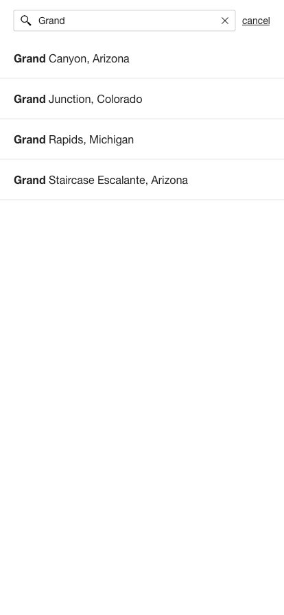
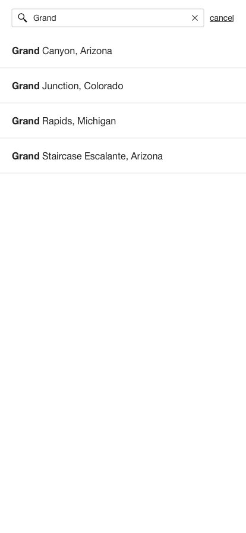
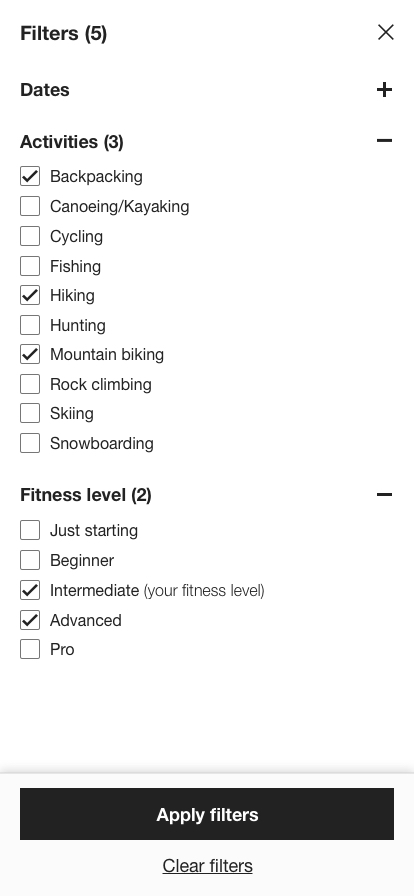
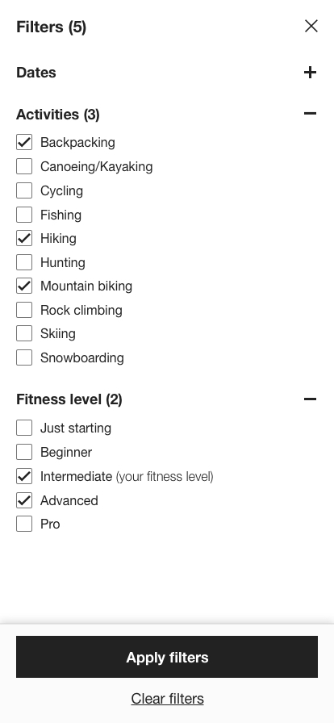

Summary
seekr is a mobile app idea that I came up with. Being an avid backpacker, hiker and mountain biker, I am always looking for new people to hike and bike with. However, it’s not always easy to find a great group to adventure with. The seekr app is about connecting people with each other via the great outdoors. Through the app, users can either join upcoming trips that fit their specifications (activity, location, fitness level, etc.), or post trips for others to join. Whether you’re looking for something fun to do outside, to learn a new skill like rock climbing or snowboarding, or to share knowledge and experiences with others, seekr is the app that makes it all possible by connecting you with the right people.
Project Goal: To create the experience for a mobile application from ideation to high-fidelity designs.
Team:
- It's just me, myself and I
Role: Product Development, User Experience Designer, Branding
Responsibilities:
- Develop the product idea
- Define business requirements
- Design the interface, workflow, and experience
- Develop branding guidelines
Below I've highlighted the steps I took to birth this idea from a simple concept to reality. From sketches, to wireframes, to final designs, I show my high level design process.
Sketching
Starting with sketches always helps me get all of ideas on paper without too much focus on aesthetic. Sketching always me to simplify complex workflows and ideate quickly.
Below are the sketches I used to translate all of the app ideas in my head onto paper. I was able to think through the different features of the app and how to best organize and structure them. Thinking through the differnt possible navigation options was crucial to do on paper. I asked myself questions like, "Is it best to combine a feed with a search component, or should these be separate navigation items?". To attempt this ideation on the computer would've been a foolish waste of time.
Wireframing
Converting sketches to low-fidelity wireframes is a crucial step in transforming sketches of an idea into a consumable deliverable. This helps bring the idea to life and allows me to explain the high level concept to someone in a structured way, without focusing too much on the aesthetic detail.
1. Create account & profile workflow
2. Main feed, search & filter workflow
 

 

3. Trips, inbox & profile
3. Detailed designing
Creating the detailed high-fidelity designs is the last step of my design process. At this point, I would deliver the designs below to the development team and work closely with an engineer to build out the application according to the specs.